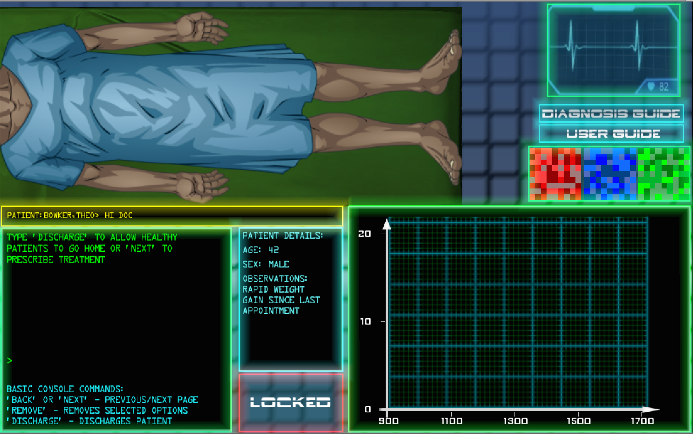
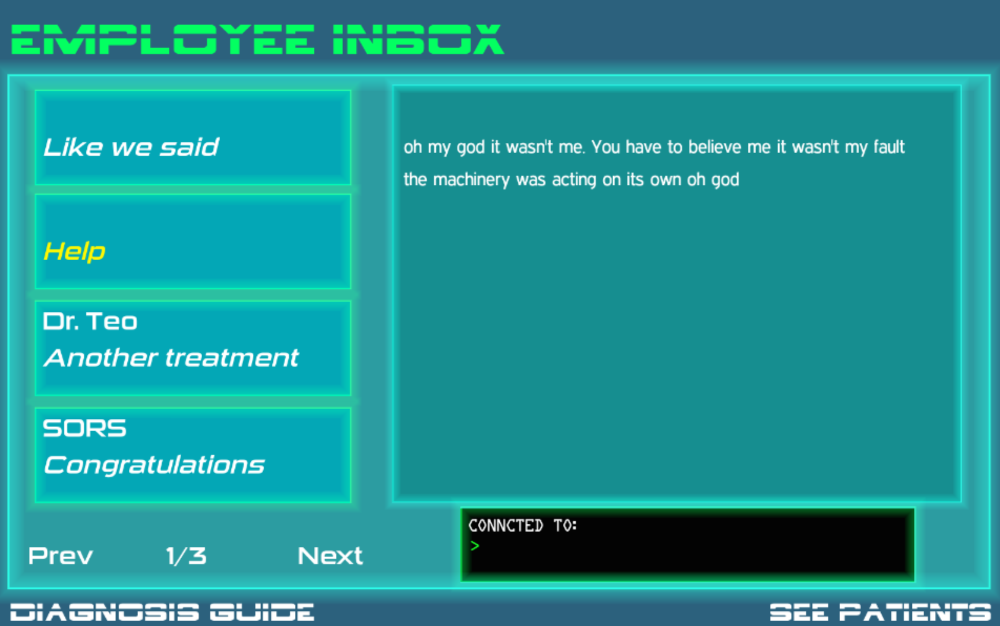

Welcome Doctor. Patients are dying...
As the newest arrival at a high tech medical facility, you're given a chance. A chance to uncover some mysterious activity. But can you do this whilst saving patients? And how do you know who to trust? And how is this new medical technology being used to kill people, when it should be helping them?
{kind=link}
This is Sci-Fi with real Science
This game is inspired by real science. Can you rise to the challenge of being a doctor and processing real medical information? How good are you with graphs? Can you interpret symptoms and give a correct diagnosis? If it sounds tough, maybe you should go play Call of Duty. Pulling a trigger is always easier...

What is SORS?
SORS stands for Spatially Offset Raman Spectroscopy. It's a new scanning technology being tested in a UK hospital, and could offer a new way to identify diseases such as osteoporosis and breast cancer. It works by shining single color light at an area of the body and detecting the energy changes of the light photons as they are scattered. As different molecules cause different scatter patterns, the composition of materials (or human tissue) can be detected using the technique. Read more here
{kind=link}
Press/Feedback
If you're interested in learning more about the game, or have played it and have feedback - thank you! Please get in touch with us: rac@sciencegamed.co.uk.